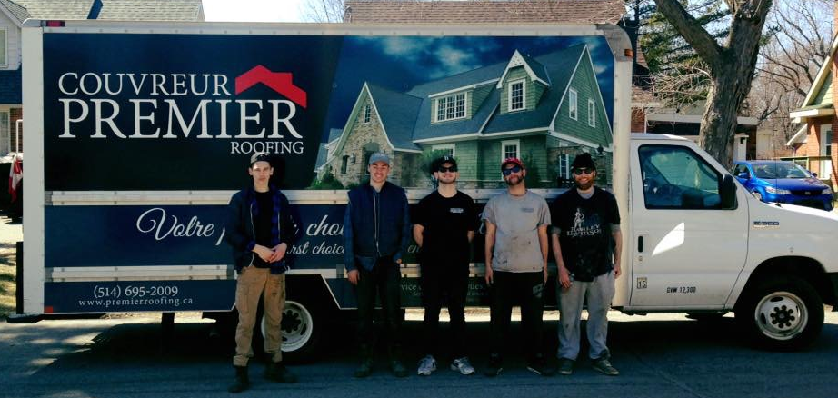

Bienvenu chez Couvreur Premier
Chez Couvreur Premier, l'integrité, le professionalism et le travail de qualité sont nos priorités. Elles se reflètent, depuis plus de 20 ans, dans notre travail, sur chaque toiture que nous avons remplacée ou réparée.
Nous savons que votre maison est l’un de vos investissements les plus importants et que la décision de remplacer votre toiture n’est pas toujours facile. Couvreur Premier vous accompagnera tout au long du processus parce que la protection de votre plus grand investissement nous tient aussi à cœur.
Afin de mieux nous connaître, nous vous invitons à naviguer sur notre site. N'hesitez pas à nous contacter en tout temps ou cliquez ici pour demander une estimation gratuite.
X
